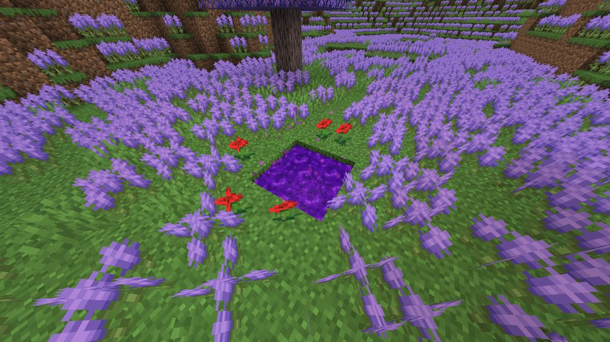

STAGE 0：準備 ポータルと魔法の地図
森に入る方法と、入って最初にやること。特に地図は全員が詰まるポイントなので、材料の集め方から全部書く。

ポータルの作り方
- 2×2の水たまりを作る 地面を4マス掘って水を入れる。オーバーワールドのどこでもいい
- 周りを自然の植物で囲む 花・草・キノコ・シダなど、水たまりに接するマスに植わっていればOK
- ダイヤモンドを1個投げ込む 雷が落ちて水が紫に変われば開通
- 飛び込む 黄昏の森に到着。帰りも同じポータルから。森側にも自動でポータルができる
⚠️ 森側の到着地点が安全とは限らない。着いたら周囲を確認して、小さい拠点（チェスト＋作業台＋かまど）を置くのが定石。
魔法の地図を作る 完全手順
地図は2段階クラフト。材料3種を集める → フォーカスを作る → 紙で囲む。
- カラスの羽を取る 森の地上にいる黒い鳥「カラス」を倒すとドロップ。黒曜石の柱の周りに群れているので、柱を見つけたらその周りを探す
- トーチベリーを取る 洞窟の天井に逆さに生えている、ほんのり光る実。近くの洞窟や「空洞の丘」の入口でだいたい見つかる。壊すと実が落ちる
- グロストーンダストを用意 基本はネザーでグロストーンを掘る（1個→ダスト4個）。森のダンジョンチェストから出ることもあるが、狙うならネザーが確実
- マップフォーカスを作る 作業台で3種をクラフト（形不問）
カラスの羽
トーチベリー
グロストーン
ダスト
※ 3つをどこに置いてもOK
- 空の魔法の地図を作る マップフォーカスを中央に、紙8枚で囲む。紙はサトウキビ3個→紙3枚（水辺で調達）
- 森の中で右クリックして使う 手に持って右クリックで描画開始。周囲のバイオームと、ボス・ダンジョンの場所がアイコン表示される
📌 地図は全部で3種類：魔法の地図（地上の構造物探し）／迷宮マップ（ラビリンス専用、作り方は STAGE 3）／鉱石マップ（迷宮マップ＋鉄・金・ダイヤのブロックで強化。迷宮内の鉱石と宝物庫が見える）。最初は魔法の地図だけで十分。
序盤の装備づくり
ナーガ戦は鉄装備一式＋弓と矢＋食料で十分。森のシカを倒せば鹿肉（焼いてステーキ）が主食になる。余裕があれば洞窟でリバルートを集めてアイアンウッド装備を作ると一気に楽になる。レシピは 素材・装備の手帖 に。
✅ 準備完了の目安：魔法の地図が描けていて、鉄装備＋弓＋食料がある。この状態で地図のナーガアイコンへ向かう。